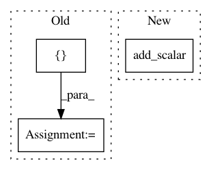

e70bdb2d089ae283781c45b8d97963823a984baa,ch10/00_pong_pg.py,,,#,51
Before Change
batch_states, batch_actions, batch_scales = [], [], []
m_baseline, m_batch_scales, m_loss_entropy, m_loss_policy, m_loss_total = [], [], [], [], []
m_grad_max, m_grad_mean = [], []
sum_reward = 0.0
with common.RewardTracker(writer, stop_reward=18) as tracker:
for step_idx, exp in enumerate(exp_source):
After Change
writer.add_scalar("loss_policy", loss_policy_v.data.cpu().numpy()[0], step_idx)
writer.add_scalar("loss_total", loss_v.data.cpu().numpy()[0], step_idx)
writer.add_scalar("grad_l2", np.sqrt(np.mean(np.square(grads))), step_idx)
writer.add_scalar("grad_max", np.max(np.abs(grads)), step_idx)
writer.add_scalar("grad_var", np.var(grads), step_idx)
batch_states.clear()
In pattern: SUPERPATTERN
Frequency: 3
Non-data size: 3
Instances
Project Name: PacktPublishing/Deep-Reinforcement-Learning-Hands-On
Commit Name: e70bdb2d089ae283781c45b8d97963823a984baa
Time: 2017-12-15
Author: max.lapan@gmail.com
File Name: ch10/00_pong_pg.py
Class Name:
Method Name:
Project Name: ruotianluo/self-critical.pytorch
Commit Name: 37a4b84ea1a89dae4d94f88afcc454ce5ac7b467
Time: 2018-05-12
Author: rluo@ttic.edu
File Name: train.py
Class Name:
Method Name: add_summary_value